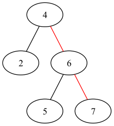

Chapter 12.2
ch12.2
12.2-1
The sequence c. is impossible because \(911 > 240\) and \(911 < 912\). The sequence e. is impossible because \(347 < 621\) and \(347 > 299\).
12.2-2
TREE-MINIMUM(x)
if x.left != NIL
return TREE-MINIMUM(x.left)
return x
TREE-MAXIMUM(x)
if x.right != NIL
return TREE-MAXIMUM(x.right)
return x
12.2-3
TREE-PREDECESSOR(x)
if x.left != NIL
return TREE-MAXIMUM(x.left)
y = x.p
while y != NIL and x == y.left
x = y
y = y.p
return y
12.2-4

To find \(7\) in the tree as above, we have \(A=\{2,5\}\), \(B=\{4,6,7\}\) and \(C=\emptyset\), and the inequation \(5 > 4\) conflicts with the professor's claim.
12.2-5
If a node in a binary search tree has two children, then its successor is the minimum key of the right subtree of the node, which has no left child; its predecessor is the maximum key of the left subtree of the node, which has no right child.
12.2-6
If \(y\) is not the ancestor of \(x\), then \(x\) and \(y\) must have a common ancestor \(z\), which means \(x.key < z.key < y.key\), and conflicts with the prerequisite, thus \(y\) is the ancestor of \(x\).
If the left child of \(y\) is not the ancestor of \(x\), then the right child of \(y\) is the ancestor of \(x\), which means \(x.key > y.key\), and conflicts with the prerequisite, thus the left child of \(y\) is the ancestor of \(x\).
If \(y\) is not the lowest ancestor of \(x\) whose left child is also an ancestor of \(x\), let \(z\) be the lowest ancestor of \(x\) whose left child is also an ancestor of \(x\), then \(z\) must be in the left subtree of \(y\), which means \(x.key < z.key < y.key\), and conflicts with the prerequisite, thus \(y\) is the lowest ancestor of \(x\) whose left child is also an ancestor of \(x\).
12.2-7
We denote the procedure by \(F(x)\), when performing \(F(x)\), we first walk down to \(x.left\), and perform \(F(x.left)\), after that we walk up from \(x.left\) to \(x\); then we perform the same actions on \(x.right\). Let \(S(x)\) be the count of moves from a node to its child or parent to perform F(x), we have
\begin{align*} S(x)= \begin{cases} 0 &\text{, if x is NIL}\\ S(x.left) + S(x.right) + 2(\text{the number of the children of x}) &\text{, if x is not NIL} \end{cases} \end{align*}Solve the recurrence, we know that \(S(x)\) is twice the number of edges of \(x\), which is \(2(n-1)\) if \(x\) is an \(n\)-node binary search tree, thus the algorithm runs in \(\Theta(n)\) time.
12.2-8
Each edge won't be visited more than twice, and we find at least one
successor from a double visit of an edge, thus we visit at most \(k\) edges
twice.
The edges we visit only once are on the path from the start to the common
ancestor of the start and its \(k\)-th successor, and the path from the
common ancestor to the \(k\)-th successor, which the number could not be more
than \(2h\).
Thus we make \(O(2k+2h)\) visits to the edges in the \(k\) successive calls
to TREE-SUCCESSOR, which takes \(O(k+h)\) time.
12.2-9
Let \(x\) be a leaf node and \(y\) be its parent, then we know there are no other nodes which its key is between \(x.key\) and \(y.key\), thus \(y\) is either the predecessor of \(x\) or the successor of \(x\).